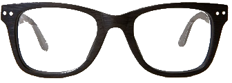

Hipstodoro
Another one, more hipster pomodoro
Use the slide control to specify your desired time, click start and focus on saving the whales!
45:00
Use the slide control to specify your desired time, click start and focus on saving the whales!